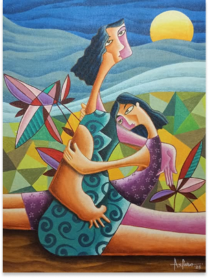

"Eternal Embrace"
Description
Junel is a passionate painter whose works capture raw emotion and vivid storytelling through bold colors and dynamic forms. Inspired by life, culture, and human connections, Junel’s art blends abstraction and realism, creating pieces that resonate deeply with viewers. Each brushstroke reflects a unique perspective, making his work both thought-provoking and visually striking.
Artist
JUNEL PLANTIG